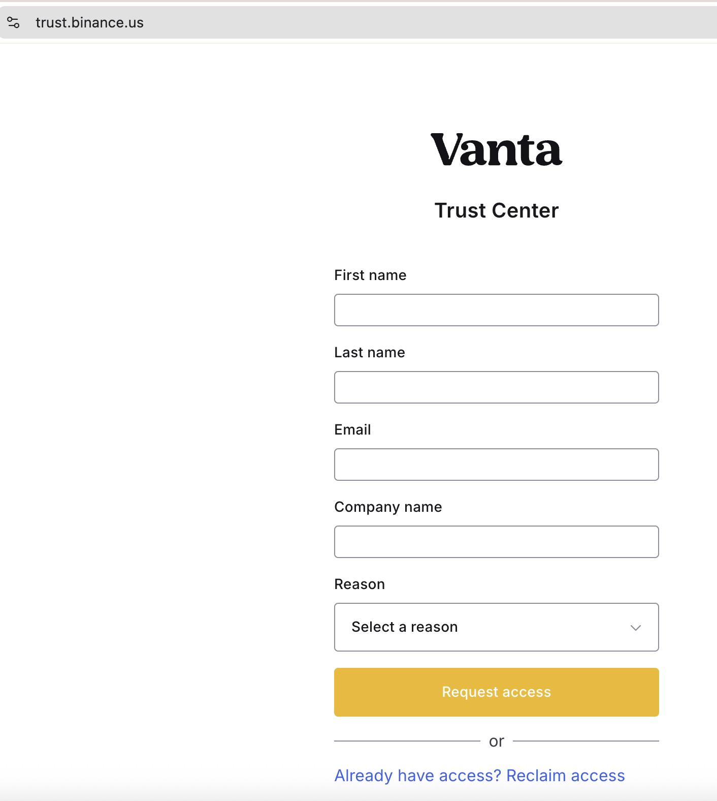

You have ISO27001 certifications and SOC2 type II audit reports with minimal risk findings.
Your web application and infrastructure security scanners report 2 Criticals, 20 Highs, 250 Medium vulnerabilities.
Your business just got exploited for $6.3Billion because an employee interviewed for a fake job on their work laptop, and downloaded malware that obfuscated itself from your scanners and intrusion detection systems. neat.
Negligence (and perhaps an overworked/underpaid employee) negated all of it.